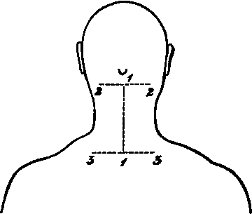

A Dissection Of The Posterior Surface Of The Cord In The Cervical Region
Description
This section is from the book "A Manual Of Dissections Of The Human Body", by R. E. Carrington. Also available from Amazon: A manual of dissections of the human body.
A Dissection Of The Posterior Surface Of The Cord In The Cervical Region
Position.—The body lying on its face, the shoulders supported by blocks, and the head hanging forwards.
I. Skin Incisions
1. A vertical one along the middle line, the upper limit of which is the central point of a line encircling the neck at the level of the apices of the Mastoid processes, and the lower the first Dorsal spinous process.
2. Transverse incisions above and below for two inches on each side. Reflect the flaps to the sides and expose the superficial fascia containing—
1. Small cutaneous branches from the Superficial Cervical artery on the outer side, and from the Profunda Cervical artery with the nerves described under No. 4.
No. 6.
II
Remove the preceding and the fascia lata, and expose—
1. The Trapezii muscles running up above to the inner third of the superior curved lines, each attached to all the Cervical spines by means of the ligamentum nucha.
2. Small portions of the Sterno-mastoidei muscles at the extreme upper and outer parts.
3. A small portion of the Splenius capitis muscle between the two preceding on either side.
III
Cut through and remove the Trapezius muscle on each side as far as it is exposed. With it there will be removed the Spinal-accessory nerve and branches from the third and fourth Cervical nerves, together with; offsets of the Superficial Cervical artery.
2. Veins corresponding to the preceding arteries, and others along the spines connected with the Dorsi-spinaL
3. At the outer parts of the surface exposed cutaneous twigs from the third and fourth Cervical nerves supplying the skin over the Trapezius muscles.
4. Along the Spinous processes the inner branches of the posterior primary divisions of the third, fourth, and fifth Cervical nerves, the third sending a branch up to the Occiput.
The following structures will now be seen on both sides:—
1. The Complexus muscle highest of all, inserted into the space between the carved lines of the Occipital bone.
2. Below this, the Splenius muscle, arising as far as it is possible to make out in this dissection, from the spines of the first Dorsal and the seventh Cervical vertebræ and the ligamentum nuchæ up to the third vertebra, and splitting above into two portions, the upper one of which goes to the head (S. capitis), and the lower to the posterior tubercles of the upper three or four Cervical transverse processes (S. colli).
3. Below the Splenius the Bhomboideus minor muscle, running downwards and outwards from the seventh Cervical and first Dorsal spines.
4. The Serratus posticus superior muscle has the same origin as the preceding, and lies beneath it; its superior border showing above it however.
5. The origin of the Levator anguli scapulæ muscle, from the upper three or four posterior tubercles of the Cervical transverse processes is seen on the outer side of the Splenius.
6. Between the Levator anguli scapulæ and the Bhomboideus minor, and below the Splenius muscles is a triangular interval, in which some tendinous slips of the Cervicalis ascendens and Transversalis colli muscles appear, the latter being internal.
7. Lying upon the Complexus muscles at their extreme upper and outer parts are the Occipital artery and vein, and lower down on the Splenius muscle branches of the Superficial Cervical artery and vein, and the Posterior External Jugular vein. 8. Lying upon the Complexus above the Splenius muscle, the internal branches of the posterior primary divisions of the second and third Cervical nerves and their communications (Great and Third Occipital nerves).
IV
a. Detach the Bhomboideus minor and the Serratus posticus superior muscles of both sides and take them away. The nerves to the Rhomboid, and also those supplying the Serrati muscles, will be divided.
b. Hook well aside the following muscles of each side:—Levator anguli scapulæ, Cervicalis ascen-dens, and Transversalis colli.
c. Remove the Splenii muscles as far as they are exposed in the space dissected. Their nerves from the external branches of the posterior primary divisions of the Cervical nerves will be seen and divided on their deep surface. There will now be exposed—
1. The tubercle of the first rib, internal to the retracted Transversalis and Cervicalis muscles on each side.
2. The Complexus muscles lying in the vertebral groove, and reaching above from the Occiput to the lower extremity of the space. The inner division called Biventer cervicis is apparent.
3. The Transversales and Cervicales muscles of both sides more fully.
4. The Trachelo-mastoid muscles on either side, inside the two immediately preceding muscles, arising from the Cervical articular processes from the fourth to the seventh inclusive, and inserted into the Mastoid processes. All their origin however, is not seen.
5. The Occipital vessels, lying upon the Complexus muscle of each side at its extreme upper part, and offsets of the Princeps Cervicis branch running down superficial to the muscle.
6. The same branches of the second and third Cervical nerves already mentioned.
7. The nerves to the Splenii muscles from the posterior primary branches of the Cervical are seen entering their deep surface.
V
a. Cut through and remove the Complexus muscles from their origins and insertions. The former; as is displayed in this dissection is from the transverse processes of the first Dorsal and seventh Cervical vertebræ, the spine of the seventh, and the articular processes of the fourth, fifth, and sixth Cervical vertebræ; the latter; is into the space between the two curved lines of the Occipital bone. The nerves to the Complexus from the Suboccipital, and internal branches of the posterior primary divisions of the second and third Cervical nerves, will be divided on removing the muscle. There will now be exposed—
1. The articular processes of the second, third, fourth, fifth, and sixth Cervical vertebræ.
2. The ligamentum nuchas now displayed by the removal of the various muscles.
3. The Suboccipital triangle, bounded internally by the Rectus capitis posticus major muscle, below and externally by the Inferior Oblique muscle, and above and externally by the Superior Oblique muscle. In its floor is the posterior arch of the Atlas.
4. The Semispinales muscles, running from the transverse processes to the spines as high as the second vertebra.
5. Above and external to the processes of the Semispinalis muscle, passing to the second and third spinous processes, is seen a small piece of the Multifidus spinæ muscle on either side.
6. Lying upon the arch of the Atlas in the floor of the triangle is seen the Vertebral artery.
7. Upon the Semispinales, beneath the nerves to be mentioned, the Profunda Cervicis branch of the Superior Intercostal artery running up to join in a general anastomosis over the Suboccipital triangle, with branches of the Vertebral and Princeps Cervicis arteries.
8. The origins of the Vertebral vein, and sometimes the Posterior Condyloid vein in the triangle. The Profunda Cervicis vein with the corresponding artery.
9. The Suboccipital nerve, and the internal divisions of the posterior primary branches of the second, third, fourth, and fifth Cervical nerves. The first, second, and third communicate and form Cruveilhier's plexus. The Suboccipital nerve lies beneath the Vertebral artery upon the arch of the Atlas and supplies both the Recti postici and Oblique muscles and the Complexus muscle. The great Occipital nerve turns round the lower border of the Inferior Oblique muscle. The third, fourth, and fifth nerves course inward over the Semispinals to become cutaneous by the Spines; these are seen at their junction with the external branches.
10. The external branches of the second, third, fourth, fifth, sixth, seventh, and eighth nerves, emerging externally to the line of the articular processes of the Cervical vertebræ. These enter the following muscles:—Complexus,Transversalis colli, Trachelo-mastoid, and Cervicalis ascendens.
11. Branches from the Vertebral artery are seen with the last-mentioned nerves.
VI
a. Remove now the Semispinales muscles, with the inner branches of the posterior primary divisions of the third, fourth, and fifth Cervical nerves lying upon them. This brings into view—
1. The seventh Cervical articular processes.
2. The inner branches of the posterior primary divisions of the sixth, seventh, and eighth Cervical nerves. In the dissection made, the corresponding branch of the fifth nerve passed beneath the Semi-spinalis muscle.
b. Clear away the Multifidus spina, the Rectus capitis posticus major and minor, the Superior and Inferior Oblique muscles of both sides.
c. The anastomosis of Vertebral, Princeps, and Profunda Cervicis arteries.
d. The origin of the Vertebral veins.
e. Cruveilhier's plexus and the nerves forming it.
f. The inner branches of the posterior primary divisions of the sixth, seventh, and eighth Cervical nerves.
This will expose—
1. The laminæ, articular, and spinous processes of the vertebræ as far as the first Dorsal, and the posterior arch of the Atlas.
2. The posterior Occipito-atloid and Atlo-axoid ligaments and the Capsular ligaments of the articular processes.
3. The Dorsi-spinal venous plexus lying upon the vertebral laminæ.
VII
Saw through the posterior arch of the Atlas, and the laminæ of the exposed vertebræ internal to the articular processes on each side, and remove the pieces of bone together with the following structures: a. The Ligamentum nuchæ.
b. The Interspinales muscles. (There are none between the Axis and Atlas.) c. The Interspinous ligaments. (Very slightly marked in the neck.) d. The Posterior Occipito-atloid, Atlo-axoid, and Ligamenta Subflava below the first two vertebra.
e. The Vertebral artery, and the Suboccipital nerve.
f. The Venae Dorsi-spinales.
This opens up the Spinal canal and exposes—
1. The Dura-mater surrounded by loose areolar tissue.
2. The Posterior Longitudinal venous plexus lying upon the Dura-mater.
VIII
Slit up the Dura-mater, with the parietal layer of the Arachnoid along the median line. This brings into view—
1. The visceral layer of Arachnoid with the Sub-arachnoid space and Pia-mater.
2. The posterior surface of the Spinal Cord.
3. The Posterior Spinal arteries, one in each side.
4. The Medulli Spinal veins, which are in the main two venous trunks, one on each side, united into a close plexus by intercommunicating branches.
Continue to:
- prev: A Dissection To Expose Fully The First Dorsal Nerve
- Table of Contents
- next: A Dissection Of The Internal Mammary Artery